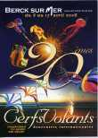
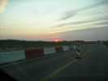
Le vendredi soir, départ. Sur la route, à l'horizon vers Berck, le soleil est bien rouge, ça promet de l'humidité pour demain !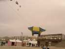
Ca n'a pas raté, samedi matin, il ne fait pas beau, beau, et le vent souffle, je ne vous dis pas !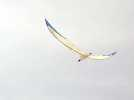
Je monte quand même mon bon vieil Albatros, c'est le plus solide de mes CVs. Il râle un peu, mais se... plie à mes désirs !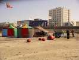
Les allemands, eux, ont prévu le coup : ils ont des tentes octogonales en tube de 5 (cm) qui doivent résister à 1 m de neige...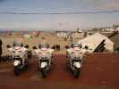
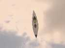
Bon, il y a quand même de plus en plus de cerfs-volants en l'air, comme cette "navette"...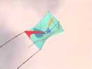
...ou ce CV à structure semblable à ceux de Claudio, mais le dessin n'est pas son style (voir plus bas)...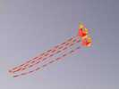
...ou ce cellulaire à queues qui pourrait bien être à Karl. Vous ne connaissez pas Karl ? Mais si, c'est un allemand avec un béret qui vous sortira si vous lui parlez son livret de travail en France au milieu du siècle dernier !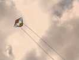
Un autre type de cerf-volant, boîte diagonale et ailes, classique et bien réalisé...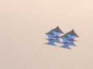
Je reviens sur Karl, celui-là est bien de lui : vol cloué dans le ciel, pas un pli, pas une toile qui flotte, et si vous voyiez les coutures...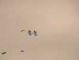
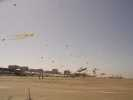
Mon oiseau vole, je vais voir les Pirates et confrères, tout là-bas, plus loin que les JdV, plus loin que tout ! En me retournant, finalement le ciel est bien meublé...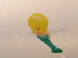
Je me suis dit que je ne montrerai que des cerfs-volants, pas des sacs gonflés pendus à des porteurs. Je ferai juste quelques exceptions... La Mama-sirène de Marco, car je sais qu'elle peut voler seule...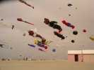
...et des nounours, encore des nounours, plein de nounours de toutes les sortes, superman, spiderman et d'autres inconnus, je ne suis pas bien la télé...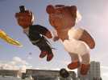
...et même une noce avec le marié, la mariée...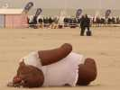
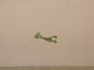
Et puis ça peut devenir ça...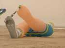
...ou ce moignon d'invalide peu attirant...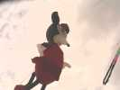
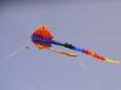
La raie a bouffé la grenouille qui pourtant est, elle, un vrai CV (voir plus loin)...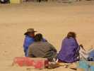
Mais Peter Lynn est sur le terrain, prêt à bondir avec son équipe...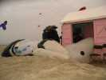
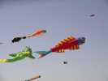
Mais je peux montrer ces poissons : contrairement à ce que pensent beaucoup de gens, ce ne sont pas des "carpes" pendues à la ligne, mais des CVs autonomes, et pas petits...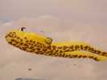
La grenouille aussi vole toute seule comme une grande...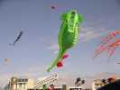
...et même cet hippocampe qui n'a pourtant pas l'air d'avoir beaucoup de surface portante !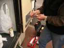
Au soir, retour à l'Entonnoir où sont garés les campings-cars. Les Pats ont bloqué la porte (de l'extérieur, évidemment) avec le câble électrique du chauffage qui force sur la serrure. Mais Bernard emporte toujours tout le matos du bricoleur...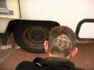
Ce qui permet d'admirer sa coiffure d'inspiration cervolistique...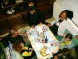
Et ce soir, on va manger au Gré du Vent (avec des majuscules, hein !), le fief de Marco qui occupe le petit salon du bas.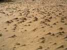
Il a plu et soufflé toute la nuit. Au matin, le sable est tout bizarre, chaque impureté a créé sa petite dune dans son sillage...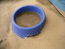
Et quand le sable sèche, il vole car le vent n'a pas cessé. Ca rentre partout, en faisant le tour de la tente...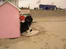
Les cabanons se retrouvent en bascule avec un joli fossé de 50 cm devant la porte ! Bon courage, Marco !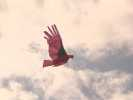
Je mets mon Condor en vol, il n'a pas encore connu de vent fort, faut bien l'aguerrir pour voir si il cassera ! Ben il a un peu les plumes en flèche, mais il supporte bien...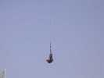
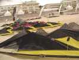
Bon, quelque part ailleurs, il y a des Championnats (du Monde, même). Les teams préparent leur nombreux matériels...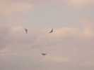
...et s'entraînent du matin au soir sur la plage (surtout le matin, il y a moins de promeneurs)...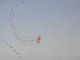
Ray Bethell, toujours égal à lui-même, présente son numéro et drague toutes les nanas du festival ! Vivement que j'aie 77 ans !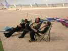
Les rescapés du team Impossible en pleine préparation mentale. Mais ils ne font plus de compèt, juste ils s'amusent, eux...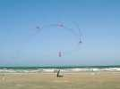
Une équipe présente des trains de petits révos avec des rubans. C'est très agréable à voir. Ils sont hors compèt, celle-ci n'est que pour les 2 lignes...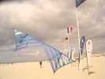
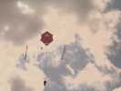
Bon, revenons à nos monofils avec cet hexagone à prolongements insectiformes...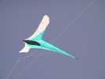
...ou ce CV plat difficile à définir mais pas vilain !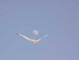
Pour réaliser ce signe égyptien, avec la complicité de la lune, j'ai mis en l'air mon Albatros...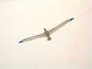
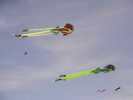
Pour montrer que je ne suis pas extrémiste, ces gonflables déjà vus, mais que je trouve beaux et impressionnants...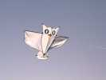
Et dans le chapitre Oiseaux, ce hibou bien stable...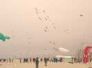
Et pour compléter le sujet "teams", le mégateam traditionnel. Ils ont un peu triché pour mettre tout le monde en l'air. En fait grâce à la surface maintenant démentielle des terrains de compète, il y a DEUX mégateams simultanément, mais chut !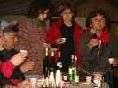
Le soir sous la tente, des animations au gré des cervolistes. Ulla nous invite à une "vodka party" légère, avec la vodka à l'herbe à bison, et du gâteau délicieux...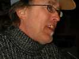
Robert écoute le discours d'Ulla en riant. Peut-être que lui, il comprend !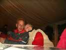
Daniela exhibe son album de belles photos qui fait le tour de la table ! Elle crée aussi des CVs (visitez son site) élégants.
Et tout un pan organisé par le musée de Berck, avec entre autres des poissons en dur repris de ceux de l'artiste officiel, mais réalisés par le public dans un calcaire de falaise facile à sculpter...